1地域のインフラとなる
総合型地域スポーツクラブ事業
スポーツクラブとして、人と地域をつなぐ
好間などの地域の拠点で、体を動かす場とおしゃべりの場をつくっています。サッカー、ソサイチ、フットサルからモルック、ボッチャまで。種目・世代・目的の垣根をこえて、誰もが会員として参加できる「地域に根ざしたクラブ」を目指し、2027年度の総合型地域スポーツクラブ設立に向けて準備を進めています。
いわき市の地域スポーツクラブ
一般社団法人ふくしま健康デザインは、誰もがスポーツにアクセスできる「地域のスポーツクラブ」をつくります。

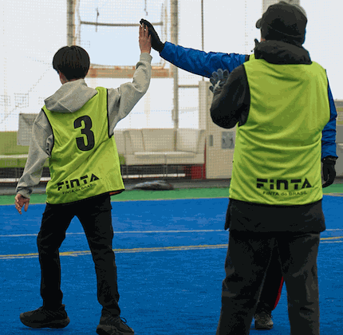
ABOUT
スポーツクラブは、地域のインフラです。体を動かす場とおしゃべりの場をつくり、社会的な孤立やフレイルを防ぎ、人がつながるきっかけを生み出します
子ども・親世代・シニアが同じ場で体を動かし、自然な交流が生まれる場をつくります。
定期的に通える居場所があることが、心と体の健康を支える予防の力になります。
コーディネーター講習などを通じて、クラブを支え、運営する地域の人を育てます。
SPORTS
走る・蹴るの本格派から、座ったままでも楽しめるものまで。
体力や年齢が変わっても、続けられる種目がある。それが「生涯スポーツ」を楽しめるクラブです。
運動の強さ
運動の強さ
仲間とチームで本格的に
7人制のサッカー
1人参加の個サルも
運動の強さ
囲まれたコートで止まらないプレー
音楽にのって楽しく運動
運動の強さ
走らない・触らない歩くサッカー
ボールを蹴ってカップを狙う
木の棒を投げて点数を競う
障害の有無に関係なく楽しめる
ほかにも、地域のみなさんの声から種目を増やしていきます。
参加したい方へ
開催日程はイベントページで確認できます。参加したいイベントが決まったら、公式LINEに「お名前・参加したいイベント・人数」を送ってください。初めての方、1人での参加も大歓迎です。
BUSINESS
1地域のインフラとなる
スポーツクラブとして、人と地域をつなぐ
好間などの地域の拠点で、体を動かす場とおしゃべりの場をつくっています。サッカー、ソサイチ、フットサルからモルック、ボッチャまで。種目・世代・目的の垣根をこえて、誰もが会員として参加できる「地域に根ざしたクラブ」を目指し、2027年度の総合型地域スポーツクラブ設立に向けて準備を進めています。
2クラブの入口となるチーム
2023年、いわき市で初めて立ち上げたウォーキングフットボールクラブ。走らない・触らない「歩くサッカー」で、体力に自信がない方も、子どもからシニアまで同じピッチで楽しめます。

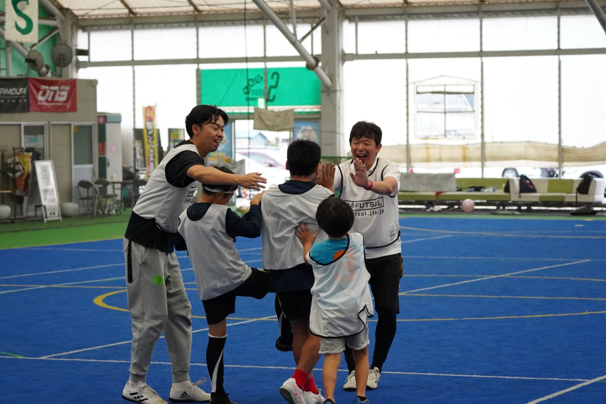
3生涯フットボーラーの拠点
マルトSC勿来十条内のフットサル施設「HEROES勿来店」の管理・運営の一部に関わっています。一人でも参加できるフットサルやソサイチのイベントを作り、誰でも気軽に来られる場をつくっています。
HEROES勿来店のイベント例
ACTIVITY
活動のようすは、代表のnoteで発信しています。
7月
福島への移住準備と並行して、いわき市で「歩くサッカー」を広める活動を始めました。
noteで読む：いわき市でウォーキングフットボールの普及活動をスタート（新しいタブで開きます）8月
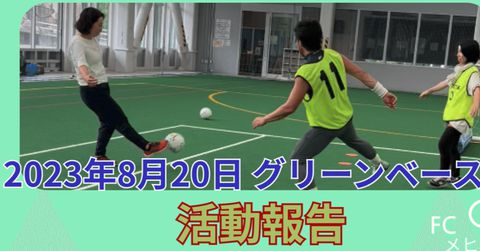
4月
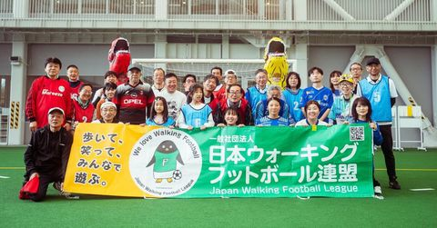
「ゆるい東北ダービー」として、両クラブのサポーターがボールを蹴り合いました。ボランティアを含め110名が参加。
noteで読む：いわきFC・モンテディオ山形のサポーター交流体験会（新しいタブで開きます）4月
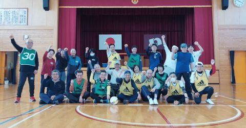
つどいの場創出事業として、四倉小学校体育館で講師を担当。65歳以上の方が、初回から25名を超えて集まりました。
noteで読む：「四倉ウォーキングフットボール倶楽部」の誕生をコーディネート（新しいタブで開きます）6月
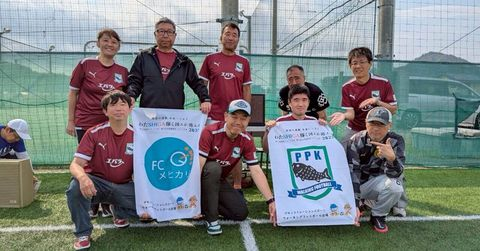
滋賀県湖南市で、北海道から佐賀県までの13チーム・約130人とプレーしました。
noteで読む：国スポ・障スポ2025 ウオーキングフットボール大会に参加（新しいタブで開きます）6月
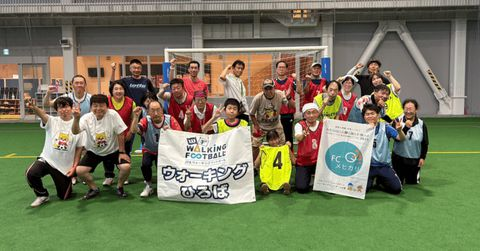
いわき市まち・未来創造支援事業として、多世代が集う「ウォーキングひろば」を開きました。
noteで読む：ウォーキングひろば in グリーンベース（新しいタブで開きます）10月
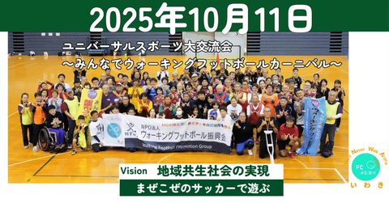
1月
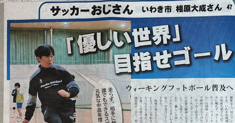
5月
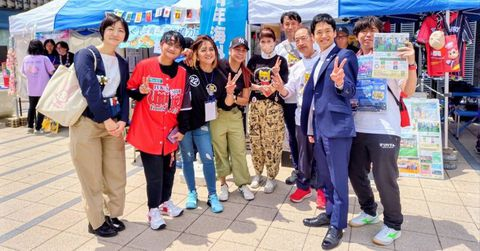
9月
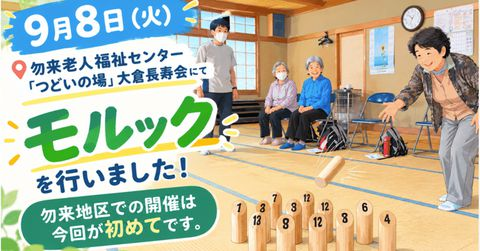
9月
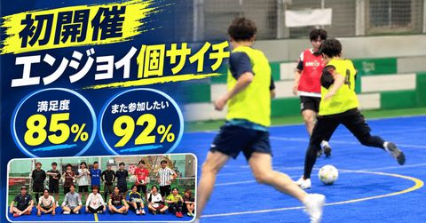
HEROES勿来店での新しいイベント。参加者の92%が「また参加したい」と答えてくれました。
noteで読む：「エンジョイ個サイチ」を初開催（新しいタブで開きます）9月
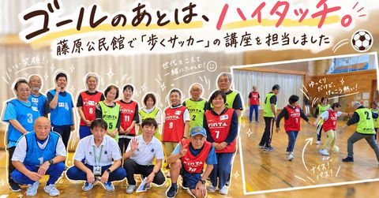
10月
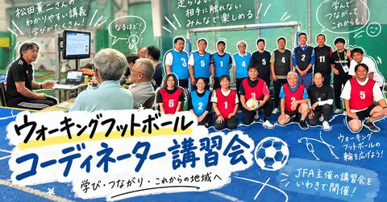
JFA主催の講習会をHEROES勿来店で開催し、15名が受講。FCメヒカリは会場準備と受付で協力しました。
noteで読む：ウォーキングフットボール コーディネーター講習会 in いわき（新しいタブで開きます）10月
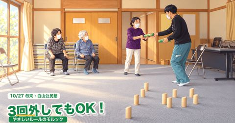
11月
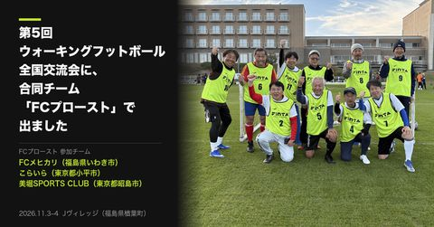
11月
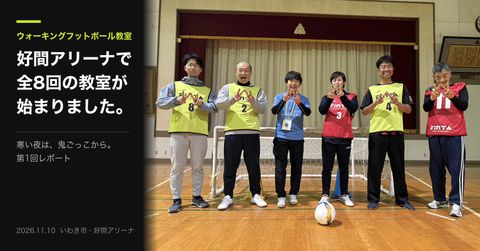
旧好間第三小学校の好間アリーナで、全8回の教室が始まりました。
noteで読む：好間アリーナでウォーキングフットボール教室がスタート（新しいタブで開きます）SUPPORT
私たちの活動に賛同し、支えてくださる方を広く募集しています。
いただいた会費は、体験会など地域の健康づくりの場の運営に使わせていただきます。
年会費 一口
3,000円
年会費 一口
10,000円
下記の口座へお振り込みのうえ、お名前・ご住所・お電話番号をメールまたはLINEでお知らせください。
イベントへの協賛、福利厚生としての健康づくりプログラム、施設やグラウンドの提供など、地域スポーツを一緒に育てていただけるパートナーを募集しています。
介護予防・フレイル対策、多世代交流、子どもの運動機会づくりなど、地域課題に対する連携のご相談をお受けしています。
連携・協賛について相談するCONTACT
スポーツへの参加のお申し込みは、公式LINEからお願いします。取材、賛助会員、協賛・連携のご相談は、お電話・メールでもお受けしています。